简单来讲， 大多数人的PC都有很大一部分闲时，通过Folding@Home分布式计算项目，每个人都可以将这一部分算力贡献出来，为抗击病毒，解决医学难题，甚至是寻找外星人做贡献。
什么是Folding@Home工程？
Folding@home 是在2000 年10 月1 日正式启动的一项世界上最大的分散式计算计划，通过号召大家GPU闲置时的计算能力，帮助科学家们了解、抵抗病毒。专注于精确地类比蛋白质折叠和错误折叠的过程，以便能更好地了解多种疾病的起因和发展，包括阿兹海默症、亨廷顿舞蹈症、牛海绵状脑病（狂牛症、狂牛症）、癌症和囊胞性纤维症。到目前为止，Folding@home 已成功类比5—10微秒的折叠过程，超出先前估计可类比的时段数千倍。现在 Folding@Home 已经上线了肺炎项目，打开 Folding@home 主页，点击“Start Folding Now”，在新的网页中点击“Download Now”即可进入下载页。
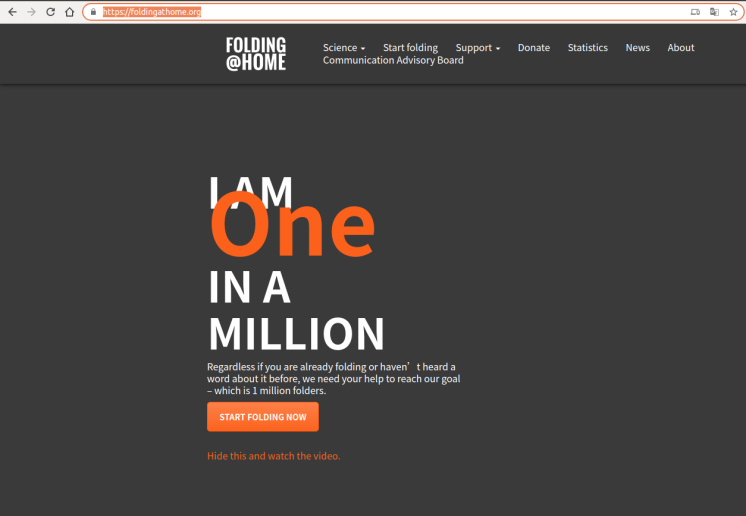
计算框架支持 MAC OS， Android, Windows, Linux等多种平台。
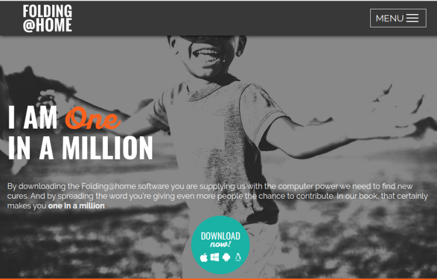
Folding@home 怎么运作的？
Folding@home 并不是依靠超级电脑来运算，主要是透过全世界成千上万的个人电脑，由用户自愿参加，并在电脑中安装客户端程序，工具就会在系统闲置时，利用CPU 多核和GPU 图型运算来工作，主要是避免电脑平常没在使用时浪费运算能力，如果用户使用时，也不会影响到原本作业，不过会有几项缺点：
比较吃效能（如需要使用时，可以关闭程式），（可以选择Light模式，仅占用很少一部分效能。）
要发挥运算，造成风扇声偏大，（可以选择Light模式，仅占用很少一部分效能。）
比较耗电，如果是笔电会导致电池提早老化
Folding@Home 会定时连接设于斯坦福大学的伺服器去取得「工作单元」（work units），即一种存有实验资料的资料包，根据实验资料进行计算。每个工作单元计算完成后，再传回伺服器。
如何使用 Floding@home 加入运算？
进入下载页面，下载安装软件:
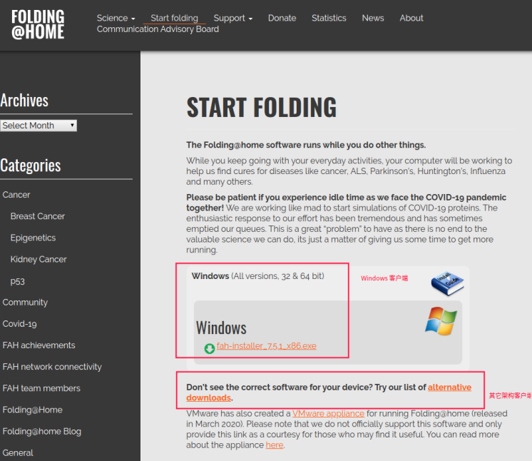
如果你的系统不是Windows，点击页面下方的“alternative downloads”，即可在选择你的操作系统，Mac、Linux常见发行版都能支持，甚至之前“模拟地球”的PS3都支持，希望索尼和微软能够重新将Folding@Home带回主机。
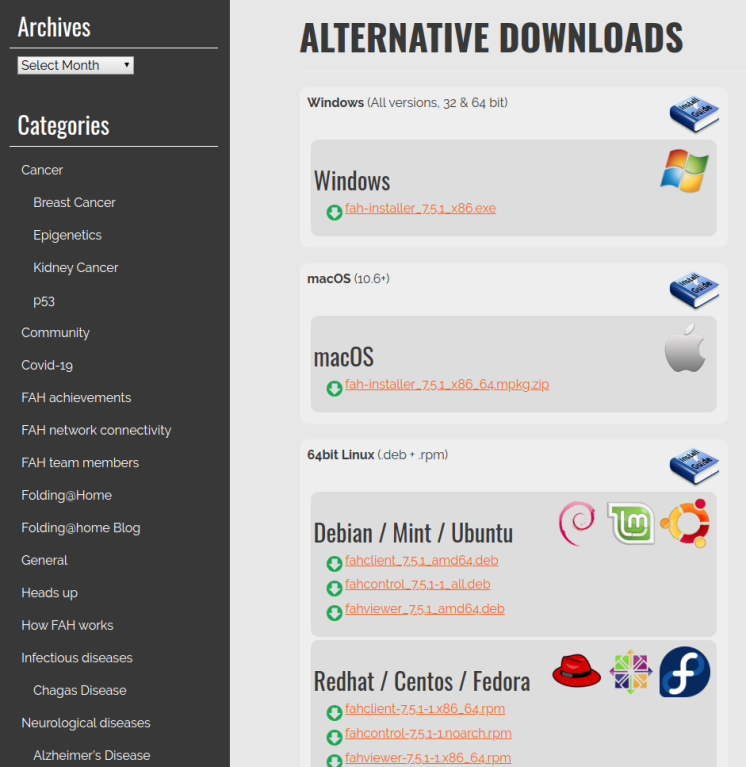
客户端下载安装完成之后，会在后台运行，退出客户端即自动结束。Folding@Home运行后会在桌面右下角显示小图标，通过访问 https://client.foldingathome.org/ 就能通过网页方便的控制程序。那么我们怎样设定Covid-19优先计算呢？
WEB控制台
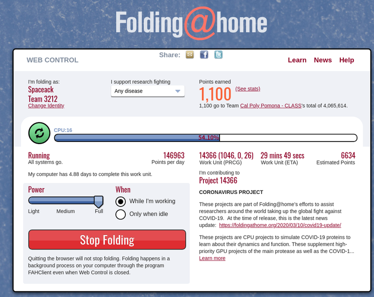
在网页控制页面的 “I support research fighting” 中选择 “Any Desease”，尽管Folding@Home不允许专门为某一个项目贡献算力，但由于现在特殊时期，肺炎相关项目拥有最高优先级，会自动分配给你相关项目计算。
桌面控制端：
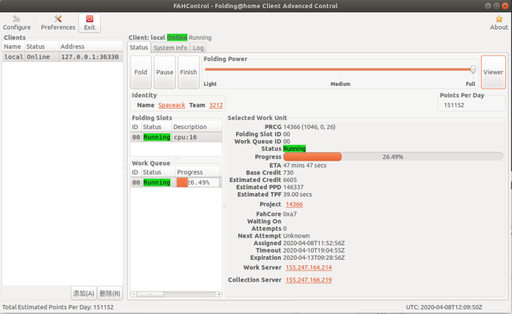
在下载完任务包之后，Folding@Home就自动开始计算了，如果大家在工作可以将算力调至中档保证自己工作效率，算力大小也是CPU和显卡性能的一大参考指标。你还可以去 https://apps.foldingathome.org/passkey/create 申请Passkey来获取额外分数奖励。
Name自己任意填，留下邮箱点击“Get Passkey”即可收到你的专属Passkey，然后再去FAH控制台填入即可。右键FAH图标，选择”FAHControl”，在弹出的界面中点击左上角“Configure”齿轮图标，再选择“Identity”选项卡，填入你刚刚申请的Name和Passkey，Team Number可以填入3213为中国队添砖加瓦。
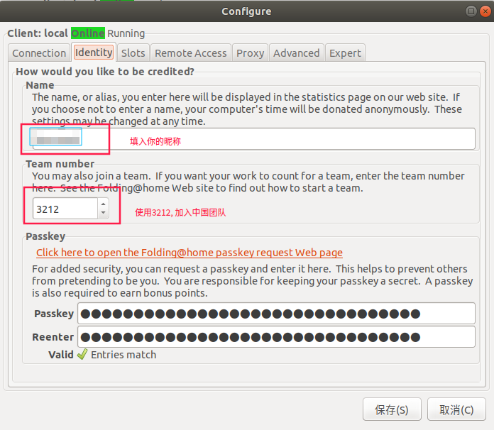
Folding@Home 还涉及到众多计算机等相关知识，而我们贡献出自己电脑的一点算力就已足够，感兴趣的同学可以去项目官网、Github等深挖。在电脑贡献出力量之后，我们自己也能凭借自己的聪明才智，帮助科学家们一起对抗病毒。
如何查看自己的积分？
团队积分排行：
目前排名第一的是由开源操作系统Linux领袖领导的团队。中国团队排名第11位
个人积分：
通过https://stats.foldingathome.org/donor/+自己填入的Name
例如：https://stats.foldingathome.org/donor/Spaceack
什么是Foldit项目？
相比Folding@Home 借助算法和算力解决蛋白质折叠问题，Foldit则充分利用人类与生俱来的三维能力和解谜思维。Foldit在2月底上线了肺炎病毒的内容，大家可以通过解谜游戏来帮助研究人员发现抗击肺炎病毒的药物。
[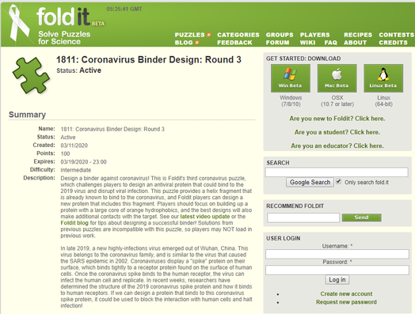
图片来自于@ Foldit，版权属于原作者
目前Foldit抗击肺炎病毒的活动来到第3轮，在页面右方可以下载游戏，Windows、Mac和Linux全平台支持。
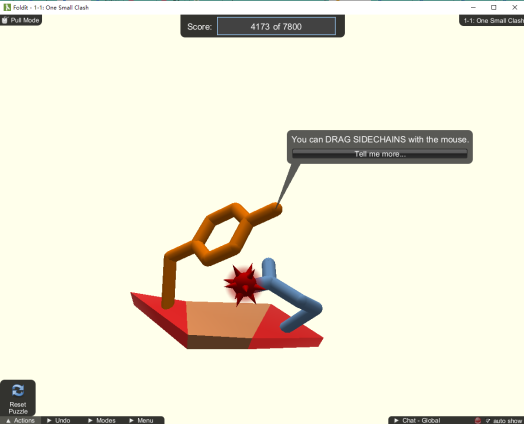
图片来自于@ 小编，版权属于原作者
游戏下载安装完成后，我们来看看怎样才能上手吧。你可以在官网注册账号，用账号登陆游戏，你可以查看自己的得分和世界排名。Foldit上手需要了解一些病毒的基础知识，对于新手来说游戏的门槛其实不低，我们先从 Intro Puzzle 来练练手吧。新手关，你需要拖动侧链来避免冲突，只需要将左边的侧链往外拖动即可解决。
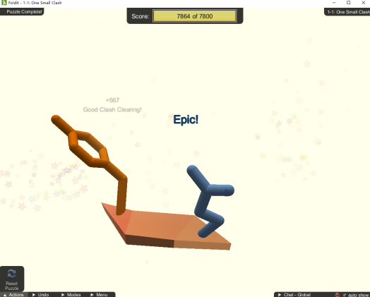
图片来自于@ 小编，版权属于原作者
当你渐入佳境之后，你可能会碰到从零开始设计蛋白质结构、解决冲突、蛋白空腔等问题。在你觉得脑洞已经打开之后，可以试着解决现实中的问题，在主菜单中选择 “Science Puzzles”。
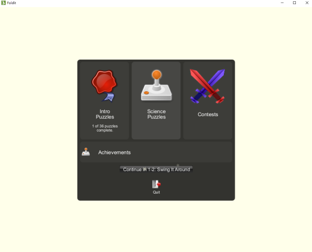
排在第一位的就是冠状病毒，我们还可以往下拉，就能看到目前正在进行的第3轮Foldit抗击肺炎病毒的活动。
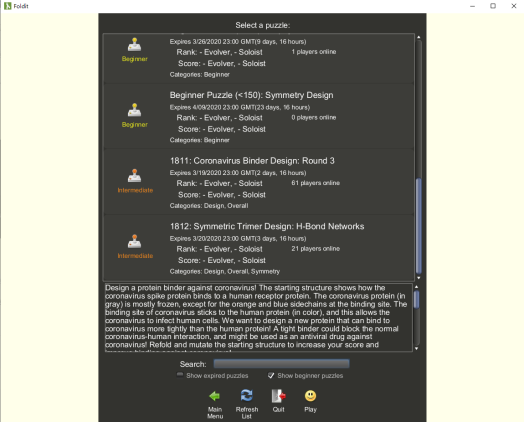
在游戏中我们可以看到肺炎病毒的真实结构，为了能阻止病毒和人类受体相互作用，实现药物对于肺炎病毒的靶向攻击，大家需要设计一种和病毒开放侧链结合的蛋白质，将蓝色的侧链和水的结合断开，也就是说破坏蓝色侧链和水形成的稳定氢键(Hydrogen bonds)。
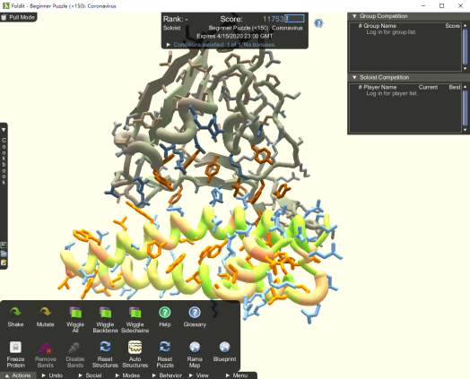
那么玩Foldit真的能够解决实际问题吗，答案是肯定的！举个栗子，科学家们一直在尝试研究解构爱滋病的一项蛋白质“Retroviral Protease”长达15年，这种逆转录酶是爱滋病毒在活体细胞中复制和繁殖的关键。在Retroviral Protease上线Foldit之后，全世界的玩家们仅用10天时间搞定它的结构破解！